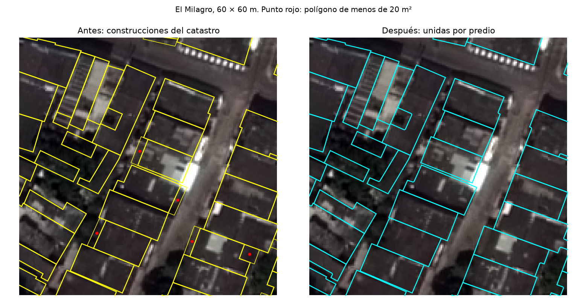
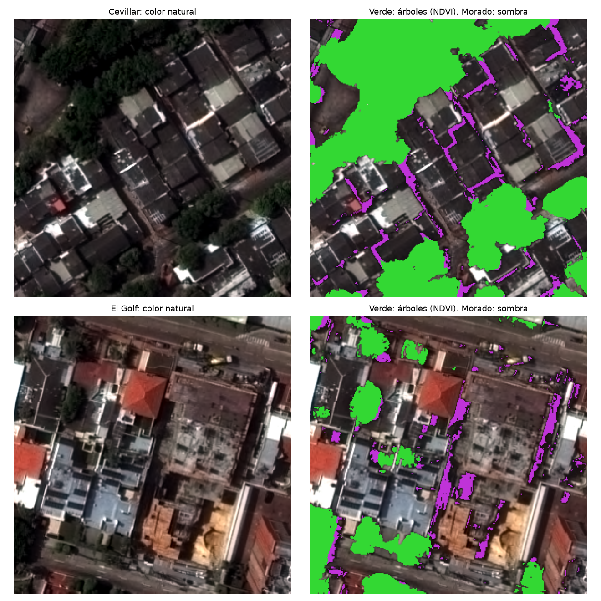
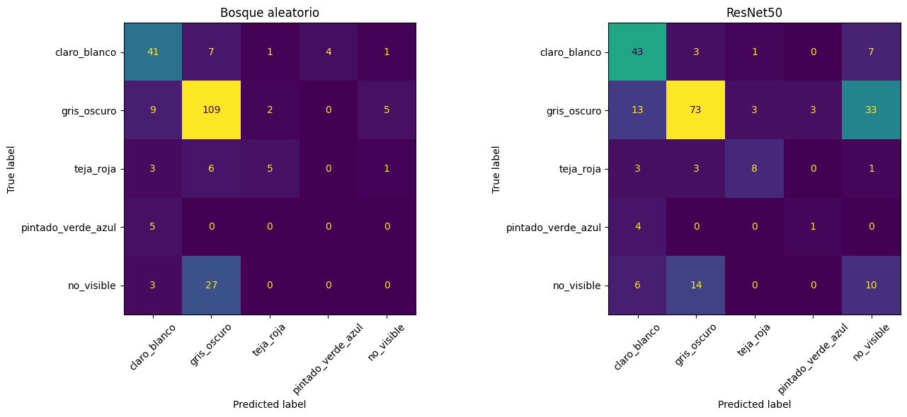
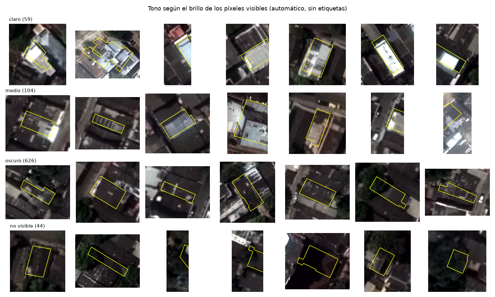
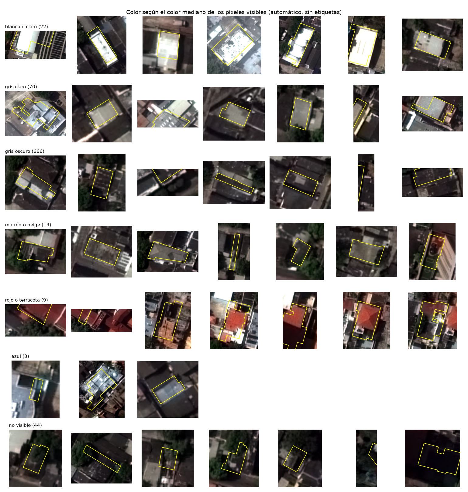
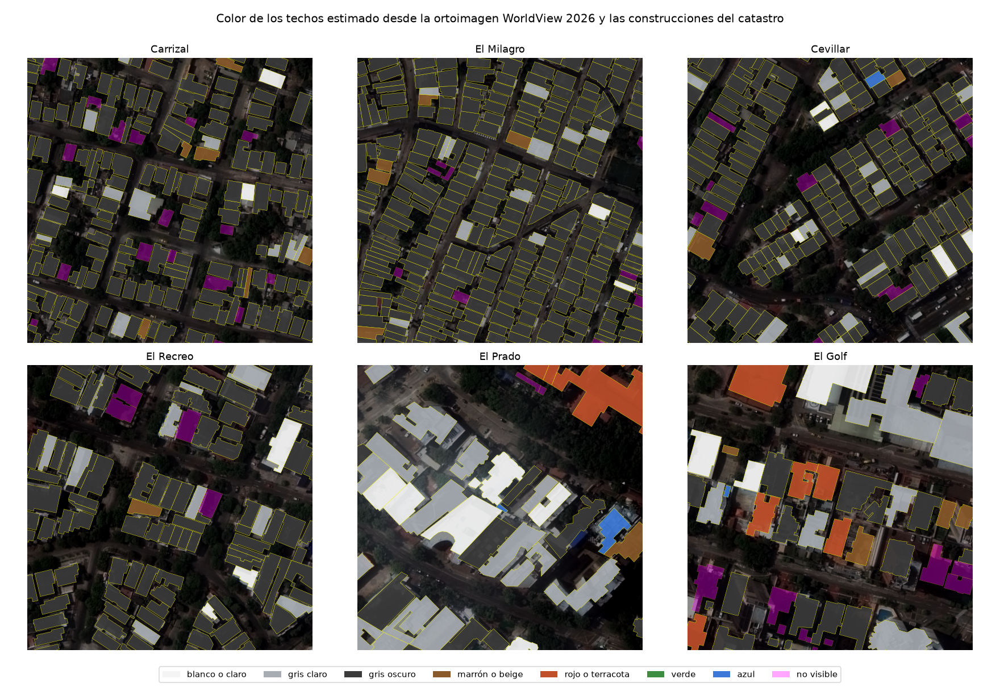

Color de los techos con la ortoimagen (piloto)#
La absortancia solar de la cubierta es uno de los parámetros que más pesan en la carga de las viviendas con techo propio, y hoy entra como un supuesto. En los priors de envolvente del Paso 6 se modela con una distribución triangular entre 0,30 y 0,95, con la moda fijada por el material (0,85 en el concreto, 0,60 en el asbesto-cemento y 0,70 en el metal), porque ninguna fuente da el color de los techos por estrato (Priors de envolvente). La propuesta incluye, al final del Paso 6, un módulo opcional para estimar el material y el color de los techos con imágenes satelitales y aprendizaje profundo, condicionado al punto de control del mes 12. Este capítulo describe el piloto que prueba si ese módulo es viable con los datos públicos de la Gerencia de Gestión Catastral, y una demostración de lo que esos datos permiten hacer.
Nota
Estado (20 de noviembre de 2026). La primera versión del piloto se corrió con 229 techos etiquetados. La segunda versión, que corrige lo que mostró la primera, está lista para correr y todavía no tiene resultados. Ninguna cifra de este capítulo entra aún en los priors de envolvente.
El piloto busca responder tres preguntas. La primera es si la ortoimagen y los polígonos de construcción del catastro quedan alineados. La segunda es si los tonos de los techos se distinguen en la imagen. La tercera es si una red convolucional acierta más que reglas simples sobre el promedio de los píxeles de cada techo.
Datos#
Todas las capas vienen del servidor ArcGIS de la Gerencia de Gestión Catastral (Alcaldía de Barranquilla, Gerencia de Gestión Catastral, 2026), con licencia CC BY-SA 4.0. Se descargaron el 20 de noviembre de 2026 desde el navegador, porque el servidor rechaza las descargas automáticas.
Capa |
Servicio |
Resolución y contenido |
|---|---|---|
Ortoimagen 2026 |
|
WorldView Legion, 28 de junio de 2026, 34 cm, 8 bandas de 16 bits |
Ortofoto 2016 |
|
Aérea, RGB, remuestreada a 25 cm, solo para comparar |
Construcciones |
|
Polígono de cada construcción, con pisos, altura y número predial ( |
Manzanas |
|
Estrato de cada manzana |
Las ocho bandas de WorldView Legion son costera, azul, verde, amarillo, rojo, borde rojo, infrarrojo cercano 1 e infrarrojo cercano 2. El orden se comprobó con la imagen: con el rojo, el verde y el azul (índices 4, 2 y 1, contando desde 0) los árboles se ven verdes en color natural, y con el infrarrojo cercano 1 (índice 6) en el canal rojo se ven rojos. La imagen trae un balance radiométrico, pero no está calibrada en reflectancia, así que los brillos y los colores son relativos a ella. Para pasar a 8 bits se usa un solo estiramiento para las seis zonas, entre los percentiles 2 y 98 de cada banda, de modo que un mismo color se vea igual en todas.
Se tomó un recorte de 200 × 200 m por estrato, en el barrio con más construcciones de uno o dos pisos y más manzanas de ese estrato, entre diez candidatos.
Zona |
Barrio |
Estrato |
Construcciones |
Techos unidos |
Techos de 20 m² o más |
|---|---|---|---|---|---|
e1 |
Carrizal |
1 |
285 |
214 |
198 |
e2 |
El Milagro |
2 |
408 |
312 |
300 |
e3 |
Cevillar |
3 |
274 |
212 |
203 |
e4 |
El Recreo |
4 |
139 |
119 |
112 |
e5 |
El Prado |
5 |
60 |
41 |
40 |
e6 |
El Golf |
6 |
66 |
65 |
55 |
Total |
1.232 |
963 |
908 |
Método#
De construcciones a techos#
En el catastro una casa suele estar partida en varias construcciones, como el cuerpo principal, una ampliación, la cocina de atrás o un patio cubierto, cada una con su polígono. En las zonas de los estratos 1 a 3, cerca de una de cada cinco construcciones mide menos de 20 m², y en la primera versión del piloto esos pedazos se etiquetaban como techos completos. Por eso las construcciones que se tocan y pertenecen al mismo terreno, es decir, que comparten los 21 primeros dígitos del número predial, se unen en un solo techo (Figura 22). La unión se hace ampliando cada polígono 0,3 m, uniéndolos y reduciendo el resultado 0,3 m, para cerrar las rendijas entre polígonos vecinos. Los techos de menos de 20 m² se descartan.


Figura 22 Construcciones del catastro antes y después de unirlas por predio, en un área de 60 × 60 m de El Milagro. Los puntos rojos marcan polígonos de menos de 20 m².#
Los polígonos a veces quedan corridos uno o dos metros respecto al techo de la imagen, y en los edificios altos el techo se desplaza aún más, porque el satélite no mira justo hacia abajo. Para que el borde no tome la calle o el techo vecino, el color se mide solo con los píxeles que están a más de 0,7 m del borde del polígono, unos dos píxeles.
Árboles y sombra#
Los árboles y la sombra se marcan píxel por píxel antes de medir el color (Figura 23). Un píxel es árbol si su índice de vegetación de diferencia normalizada (Rouse et al., 1974),
pasa de 0,3, con el infrarrojo cercano 1 y el rojo. Un píxel es sombra si su brillo visible, el promedio del rojo, el verde y el azul ya estirados, es menor que 0,07 y además es muy oscuro en el infrarrojo (menor que 0,12). La segunda condición separa la sombra de los techos oscuros, que reflejan algo de infrarrojo aunque se vean negros. Con un umbral más alto, de 0,12 en el visible, la máscara marcaba como sombra techos enteros muy oscuros.


Figura 23 Píxeles marcados como árbol (verde) y como sombra (morado) en Cevillar y El Golf.#
Un techo con menos de la mitad de sus píxeles interiores visibles queda como «no visible» sin etiquetarlo a mano. En la primera versión esa clase se etiquetaba a ojo y era la que más se confundía con el gris oscuro.
Tono y color#
La absortancia depende de cuán claro u oscuro es el techo más que de su matiz. Por eso la clase que se predice para la tesis es el tono, en tres niveles, y el color queda aparte como demostración (Tabla 29).
Tono |
Incluye |
Absortancia esperada |
|---|---|---|
Claro |
Blanco, pintado de claro, aluminio brillante |
Baja |
Medio |
Teja roja o terracota, azul o verde claro, zinc en buen estado, gris medio |
Intermedia |
Oscuro |
Gris oscuro, marrón oscuro, verde o azul oscuro, zinc oxidado, asbesto o losa envejecida |
Alta |
No visible |
Más de la mitad del techo tapada por árboles o sombra |
No se estima |
Para cada techo se calculan la mediana de los píxeles visibles en cada banda, el brillo visible mediano, su desviación estándar, el NDVI medio y las fracciones de árbol, sombra y píxeles visibles. Con la mediana RGB se obtienen además un tono y un color automáticos, sin ningún aprendizaje. El tono automático corta el brillo mediano en 0,30 y 0,55. El color automático pasa la mediana RGB a matiz, saturación y valor, y la nombra blanco, gris claro, gris oscuro, marrón, rojo o terracota, verde o azul según rangos fijos de esos tres valores. Los techos marrón oscuro tienen un matiz parecido al de los grises oscuros en esta imagen, y por eso se exige poca saturación para llamarlos marrones solo cuando el techo es oscuro.
Etiquetado#
Los techos se etiquetan a mano en Colab, con una herramienta que muestra tres vistas de cada uno: el techo a color con el entorno atenuado, la máscara de árboles y sombra, y el entorno con el polígono marcado. Primero se elige el color, que es opcional, y luego el tono, que pasa al techo siguiente. Si el techo mezcla tonos se elige el de la mayor parte, y si hay duda se salta. Los techos salen alternando zonas y, dentro de cada zona, alternando los que el tono automático ve oscuros y los demás, para que los tonos poco frecuentes tengan más ejemplos.
Las 229 etiquetas de la primera versión se reaprovechan cuando todas las construcciones que forman un techo tenían la
misma clase: claro_blanco pasa a claro, gris_metalico y teja_roja a medio y gris_oscuro a oscuro. Las de
pintado_verde_azul y no_visible se vuelven a etiquetar. La meta de la segunda versión es de 250 techos.
Modelos#
Se comparan tres modelos de complejidad creciente. El más simple es el tono automático, que no aprende nada. El segundo es un bosque aleatorio (Breiman, 2001) de 500 árboles con pesos por clase, entrenado con las medianas de las ocho bandas y las variables de brillo, NDVI y visibilidad. El tercero es una ResNet50 (He et al., 2016) preentrenada con ImageNet y congelada, con una capa nueva de salida, que recibe el recorte RGB de 128 × 128 píxeles con el entorno atenuado. Para aumentar los datos se voltean y rotan los recortes, porque un techo no tiene una orientación fija, y se entrena un número fijo de 30 épocas con pesos por clase, ya que con tan pocos techos no queda un conjunto de validación interno.
Validación por zona#
Cada modelo se entrena con cinco zonas y se prueba en la sexta, y se repite para las seis. Así el modelo nunca ve techos vecinos de los que evalúa, que se parecen mucho entre sí. Como hay una sola zona por estrato, esta validación también mide si el modelo funciona en un estrato que no vio, y es por eso exigente. Se reportan la exactitud, la exactitud balanceada, que promedia el acierto de cada clase, y el F1 macro. La diferencia de F1 macro entre la red y el bosque lleva un intervalo de confianza del 95 % por remuestreo de los techos (2.000 repeticiones). Los techos no visibles no entran en la validación, porque esa clase la decide la máscara.
Proporciones corregidas por estrato#
El producto que necesita la tesis es la proporción de cada tono por estrato o por arquetipo, no el tono de cada techo. Contar las predicciones sesga esa proporción hacia las clases que el modelo sobrepredice. Si \(C_{ij}\) es la probabilidad de que un techo de tono real \(i\) se prediga como \(j\), estimada con la validación por zona, y \(q\) es el vector de proporciones predichas en un estrato, las proporciones reales \(p\) cumplen \(q = C^{\top} p\). Se resuelve por mínimos cuadrados con \(p \geq 0\) y se normaliza para que sume 1. Se guardan las proporciones observadas, las corregidas y la fracción de techos no visibles de cada estrato.
Primera versión#
La primera corrida usó las construcciones del catastro tal como vienen, seis clases de color etiquetadas a mano y la misma validación por zona. Se etiquetaron 229 techos: 125 gris oscuro, 54 claros o blancos, 30 no visibles, 15 de teja roja y 5 pintados de verde o azul. La clase gris metálico no llegó a cinco ejemplos y quedó fuera.
Modelo |
Exactitud |
Exactitud balanceada |
F1 macro |
|---|---|---|---|
Bosque aleatorio |
0,677 |
0,393 |
0,389 |
ResNet50 |
0,590 |
0,489 |
0,486 |
La mayor exactitud del bosque es engañosa. El 55 % de los techos etiquetados era gris oscuro, y el bosque acierta sobre todo esa clase, mientras que no acierta ninguno de los 30 no visibles ni de los 5 pintados (Figura 24). La ResNet50 reparte mejor el acierto entre clases, pero clasifica como no visibles 33 de los 125 techos gris oscuro. Al revisar los recortes aparecieron tres causas comunes a los dos modelos. Muchos polígonos eran solo una parte del techo, la sombra y los árboles se confundían con los techos oscuros, y los techos marrón oscuro, verdes y azul claro no cabían bien en las clases de color. Esas tres causas son las que corrige la segunda versión.


Figura 24 Matrices de confusión de la primera versión con validación por zona. Filas: clase etiquetada. Columnas: clase predicha.#
Por zona, la exactitud de la ResNet50 fue de 0,51 en El Golf a 0,67 en El Prado, y la del bosque de 0,49 en El Golf a 0,91 en El Milagro, con entre 30 y 43 techos por zona. Con tan pocos techos por zona estas cifras varían mucho, y la diferencia entre zonas no se puede separar de la diferencia entre estratos.
Segunda versión#
La segunda versión aplica la unión por predio, la máscara de árboles y sombra y el tono en tres niveles descritos en el método. Con la misma regla aplicada en local, sin etiquetas, el tono automático deja 642 techos oscuros, 110 medios, 60 claros y 52 no visibles. Esta distribución no es todavía un resultado, porque los cortes de brillo no se han comparado con las etiquetas, pero muestra que los techos oscuros dominan en las zonas de los estratos 1 a 4 y que los techos claros son más frecuentes en El Prado y El Golf (Figura 25).


Figura 25 Ejemplos de techos por tono automático, con el polígono unido por predio en amarillo. Entre paréntesis, el número de techos de cada tono en las seis zonas.#
Demostración para Catastro: color de los techos#
Además de lo que necesita la tesis, la combinación de la ortoimagen con las construcciones del catastro permite asignar un color a cada techo de la ciudad sin entrenar ningún modelo (Figura 26 y Figura 27). Esta información podría servir a la Gerencia de Gestión Catastral para actualizar la calificación de la cubierta, para identificar techos claros y oscuros en programas de techos fríos o para ubicar techos aptos para paneles solares. Los nombres de color son relativos a esta imagen, que no está calibrada, y los marrones oscuros todavía se confunden con los grises oscuros. La segunda versión mide cuánto coincide el color automático con el etiquetado a mano.


Figura 26 Ejemplos de techos por color automático. Entre paréntesis, el número de techos de cada color en las seis zonas.#


Figura 27 Color automático de los techos en las seis zonas del piloto.#
Cómo entraría en la tesis#
Si la segunda versión confirma que el tono se puede predecir, el módulo se extendería a toda la ciudad y daría la proporción de techos claros, medios y oscuros en cada arquetipo con techo propio, es decir, en las casas y en los apartamentos del último piso. Esas proporciones reemplazarían el supuesto actual sobre el color en los priors de absortancia del Paso 6, con un rango de absortancia para cada tono tomado de la literatura. El cambio se registraría como ajuste frente a la propuesta antes de usarlo. Los mismos datos sirven después para los escenarios de techos fríos de la Fase 2.
Limitaciones#
La imagen no está calibrada en reflectancia. El tono es relativo a la imagen y no da la absortancia directamente, sino una clase a la que luego se asigna un rango.
La imagen es de una sola fecha, el 28 de junio de 2026. La sombra depende de la hora de paso del satélite, y un techo mojado o con polvo puede verse más oscuro de lo que es.
Los polígonos del catastro pueden estar corridos o desactualizados, y en los edificios altos el techo se desplaza respecto a la huella. Usar solo los píxeles interiores reduce el problema pero no lo elimina.
La imagen ve la cara exterior del techo. El cielo raso, que cambia mucho la ganancia de calor por la cubierta, no se ve y sigue siendo un supuesto.
Hay una sola zona por estrato y unos 40 a 300 techos por zona. El estudio completo necesita varias zonas por estrato para separar el efecto del barrio del efecto del estrato.
Una sola persona etiqueta los techos. Conviene que una segunda persona etiquete una submuestra para medir el acuerdo entre las dos.
Archivos#
La carpeta techos/ del repositorio
tiene el notebook del piloto para Colab (piloto_techos.ipynb), el script que genera las figuras de ejemplo
(scripts/ejemplos_techos.py) y las figuras de este capítulo. Las imágenes y los polígonos no se versionan, pero se
pueden descargar del servidor de la Gerencia de Gestión Catastral con los servicios de la Tabla 27.
Las etiquetas por techo no se publican.